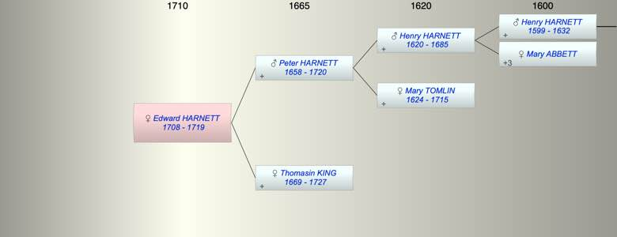

| [Index] |
| Edward HARNETT (1708 - 1719) |
|  |
| b. 1708 at St Laurence |
| d. 1719 at St Laurence aged 11 |
| Parents: |
| Peter HARNETT (1658 - 1720) |
| Thomasin KING (1669 - 1727) |
| Siblings (3): |
| Henry HARNETT (1695 - ) |
| James HARNETT (1702 - 1719) |
| Peter HARNETT (1706 - 1776) |
| Events in Edward HARNETT (1708 - 1719)'s life | |||||
| Date | Age | Event | Place | Notes | Src |
| 1708 | Edward HARNETT was born | St Laurence | bap 29 Apr 1708 ex FS | ||
| 1719 | 11 | Edward HARNETT died | St Laurence | Note 1 | |
| Note 1: buried 1719 son of Peter and Thomasin ex FMP |
| Created on a Mac™ using iFamily for Mac™ on 8 Oct 2023 |